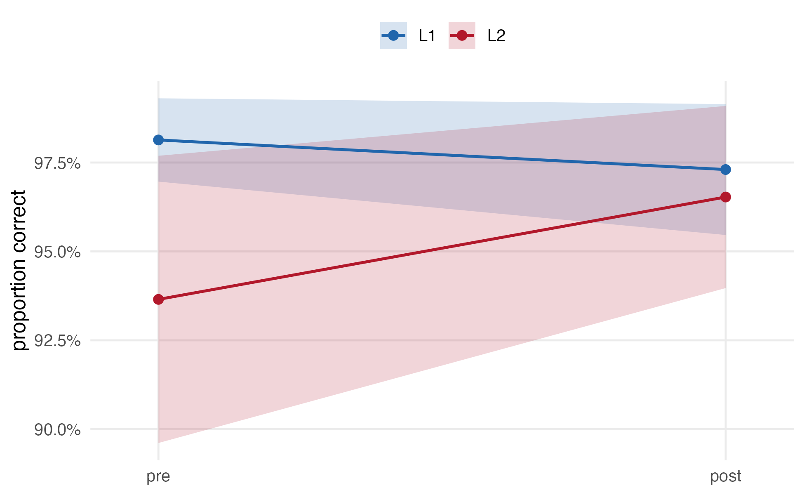
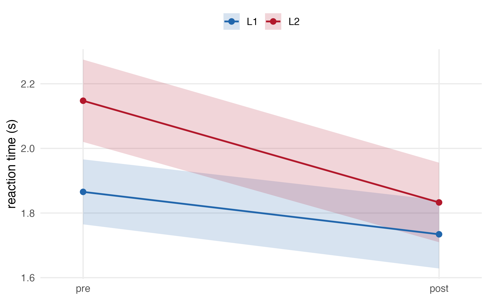
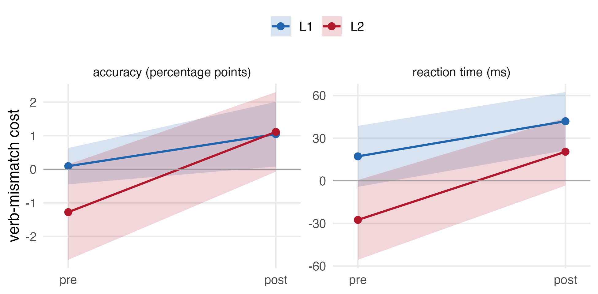
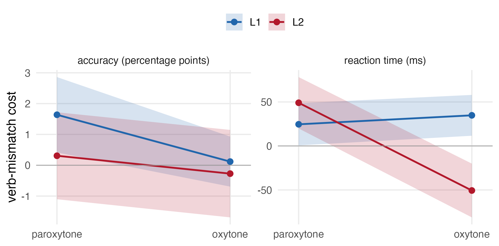
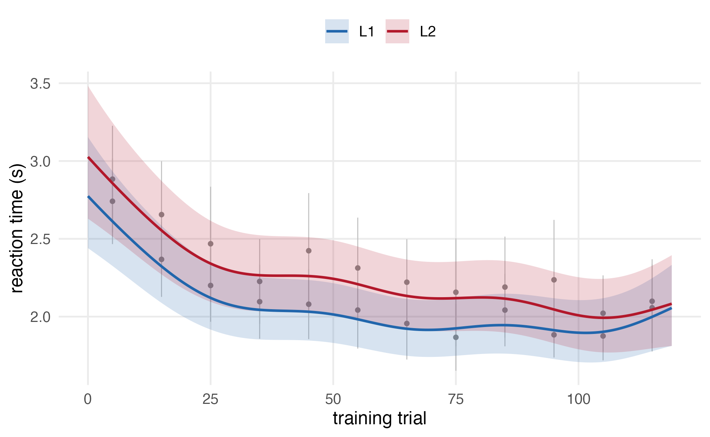

Dependent variables. Accuracy, coded 1 for a correct PRESENTE or PASADO judgement and 0 otherwise, and reaction time on correct trials, in seconds, trimmed to 200 to 5000 ms.
Independent variables. group (L1, L2),
between participants. phase (pre, post), within
participants. condition (six levels), within participants,
crossing verb_stress (paroxytone, oxytone),
verb_match (Match, Mismatch) and noun_match
(Match, Mismatch). In the training models, standardized trial number
(trial_z) replaces phase and
condition.
Accuracy and reaction time from the pre- and post-test phases were
analyzed using generalized linear mixed-effects models fit with the
lme4 package. Accuracy was modeled with a binomial family
and logit link; reaction time was modeled with a Gaussian family on
log-transformed RT, selected over Gamma and inverse Gaussian
alternatives on the basis of DHARMa dispersion. Both models included
group, phase, their two-way interaction, and a
main effect of condition as population-level (fixed)
effects. The random-effects structure included by-participant random
intercepts and slopes for phase, and by-item random
intercepts. All categorical predictors used sum-to-zero contrasts.
Four pairs of follow-up models replaced condition with
the factors it crosses, testing group × phase
× verb_match, group × phase ×
noun_match, verb_stress ×
verb_match, and group ×
verb_stress × verb_match, in accuracy and
reaction time separately.
Training accuracy was modeled with a binomial-logit growth curve
including group, trial_z, and their
interaction, with by-participant random intercepts and slopes for trial
and by-item random intercepts. Non-linear change across training was
tested with generalized additive mixed models fit with the
mgcv package, including a smooth over trial, a by-group
difference smooth, by-participant factor smooths, and by-item random
effects.
Significance was assessed by nested model comparison; effects involved in a higher-order interaction were tested against a model without that interaction, to preserve marginality. Decision rule: α = .05.
| Group | Phase | Accuracy | RT (correct) | n |
|---|---|---|---|---|
| L1 | pre | 95.1% | 1.91 s | 17 |
| L1 | training | 75.0% | 2.08 s | 17 |
| L1 | post | 93.3% | 1.79 s | 17 |
| L2 | pre | 89.3% | 2.24 s | 14 |
| L2 | training | 64.8% | 2.28 s | 14 |
| L2 | post | 92.0% | 1.90 s | 14 |
L1 accuracy was 95.1% at pre-test and 93.3% at post-test. L2 accuracy was 89.3% at pre-test and 92.0% at post-test. Reaction time fell in both groups, from 1.91 to 1.79 s in the L1 group and from 2.24 to 1.90 s in the L2 group.
Accuracy was modelled with a binomial-logit mixed model and reaction time with a Gaussian model on log RT, both with by-participant intercepts and a slope for phase, and by-item intercepts. Effects were tested by nested model comparison, α = .05.
Accuracy showed a group by phase interaction, \(\chi^2\)(1) = 7.73, p = 0.005, and an effect of condition, \(\chi^2\)(5) = 24.66, p < .001. Reaction time showed the same interaction, \(\chi^2\)(1) = 9.38, p = 0.002, together with effects of group, \(\chi^2\)(1) = 6.94, p = 0.008, phase, \(\chi^2\)(1) = 31.85, p < .001, and condition, \(\chi^2\)(5) = 131.29, p < .001.
The cost of a verb mismatch grew from pre-test to post-test in both accuracy, \(\chi^2\)(1) = 12.83, p < .001, and reaction time, \(\chi^2\)(1) = 9.19, p = 0.002, and differed between groups in reaction time, \(\chi^2\)(1) = 7.77, p = 0.005. The three-way interaction of group, verb stress and verb match was reliable in both measures, \(\chi^2\)(1) = 4.79, p = 0.029 for accuracy and \(\chi^2\)(1) = 18.33, p < .001 for reaction time. No noun-match effect reached significance in either measure.
Training accuracy improved across trials, \(\chi^2\)(1) = 4.59, p = 0.032, and was higher in the L1 group, \(\chi^2\)(1) = 3.91, p = 0.048, with no group by trial interaction, \(\chi^2\)(1) = 1.02, p = 0.313. A generalised additive model showed that reaction time changed non-linearly across training (edf = 5.64, p < .001) while accuracy did not (edf = 1.00), and that the two groups followed the same trajectory.
Training accuracy improved across trials, \(\chi^2\)(1) = 4.59, p = 0.032, and was higher in the L1 group, \(\chi^2\)(1) = 3.91, p = 0.048, with no group by trial interaction, \(\chi^2\)(1) = 1.02, p = 0.313. A generalised additive model showed that reaction time changed non-linearly across training (edf = 1.89, p < .001) while accuracy did not (edf = 1.00), and that the two groups followed the same trajectory.
| Set | Model | Effect | χ² | df | p |
|---|---|---|---|---|---|
| pre/post and training | accuracy | group:phase | 7.73 | 1 | 0.005 |
| pre/post and training | accuracy | cond_name | 24.66 | 5 | 0.000 |
| pre/post and training | accuracy | group | 3.87 | 1 | 0.049 |
| pre/post and training | accuracy | phase | 0.43 | 1 | 0.511 |
| pre/post and training | rt | group:phase | 9.38 | 1 | 0.002 |
| pre/post and training | rt | cond_name | 131.29 | 5 | 0.000 |
| pre/post and training | rt | group | 6.94 | 1 | 0.008 |
| pre/post and training | rt | phase | 31.85 | 1 | 0.000 |
| pre/post and training | training | group:trial_z | 1.02 | 1 | 0.313 |
| pre/post and training | training | group | 3.91 | 1 | 0.048 |
| pre/post and training | training | trial_z | 4.59 | 1 | 0.032 |
| verb and noun cue | acc_verbmatch | group:phase:verb_match | 0.71 | 1 | 0.399 |
| verb and noun cue | acc_verbmatch | group:verb_match | 1.59 | 1 | 0.207 |
| verb and noun cue | acc_verbmatch | phase:verb_match | 12.83 | 1 | 0.000 |
| verb and noun cue | rt_verbmatch | group:phase:verb_match | 0.53 | 1 | 0.468 |
| verb and noun cue | rt_verbmatch | group:verb_match | 7.77 | 1 | 0.005 |
| verb and noun cue | rt_verbmatch | phase:verb_match | 9.19 | 1 | 0.002 |
| verb and noun cue | acc_nounmatch | group:phase:noun_match | 0.18 | 1 | 0.668 |
| verb and noun cue | acc_nounmatch | group:noun_match | 0.17 | 1 | 0.680 |
| verb and noun cue | acc_nounmatch | phase:noun_match | 2.76 | 1 | 0.096 |
| verb and noun cue | rt_nounmatch | group:phase:noun_match | 0.05 | 1 | 0.818 |
| verb and noun cue | rt_nounmatch | group:noun_match | 0.47 | 1 | 0.492 |
| verb and noun cue | rt_nounmatch | phase:noun_match | 1.55 | 1 | 0.214 |
| verb and noun cue | acc_stress_vm | verb_stress:verb_match | 8.44 | 1 | 0.004 |
| verb and noun cue | acc_stress_vm | verb_stress | 3.28 | 1 | 0.070 |
| verb and noun cue | acc_stress_vm | verb_match | 2.75 | 1 | 0.097 |
| verb and noun cue | rt_stress_vm | verb_stress:verb_match | 8.22 | 1 | 0.004 |
| verb and noun cue | rt_stress_vm | verb_stress | 53.44 | 1 | 0.000 |
| verb and noun cue | rt_stress_vm | verb_match | 3.94 | 1 | 0.047 |
| verb and noun cue | acc_g_s_vm | group:verb_stress:verb_match | 4.79 | 1 | 0.029 |
| verb and noun cue | acc_g_s_vm | group:verb_stress | 3.31 | 1 | 0.069 |
| verb and noun cue | acc_g_s_vm | group:verb_match | 3.98 | 1 | 0.046 |
| verb and noun cue | acc_g_s_vm | verb_stress:verb_match | 8.89 | 1 | 0.003 |
| verb and noun cue | rt_g_s_vm | group:verb_stress:verb_match | 18.33 | 1 | 0.000 |
| verb and noun cue | rt_g_s_vm | group:verb_stress | 1.74 | 1 | 0.187 |
| verb and noun cue | rt_g_s_vm | group:verb_match | 4.74 | 1 | 0.029 |
| verb and noun cue | rt_g_s_vm | verb_stress:verb_match | 8.24 | 1 | 0.004 |

Model-predicted accuracy by group and phase, with 95% CI.

Model-predicted reaction time by group and phase, with 95% CI.

Verb-mismatch cost by group and phase, with 95% CI. Positive means mismatch is worse.

Verb-mismatch cost by group and verb stress, with 95% CI.

Training reaction time. Grey points are observed means in 10-trial bins; lines are the GAMM fit with 95% CI.